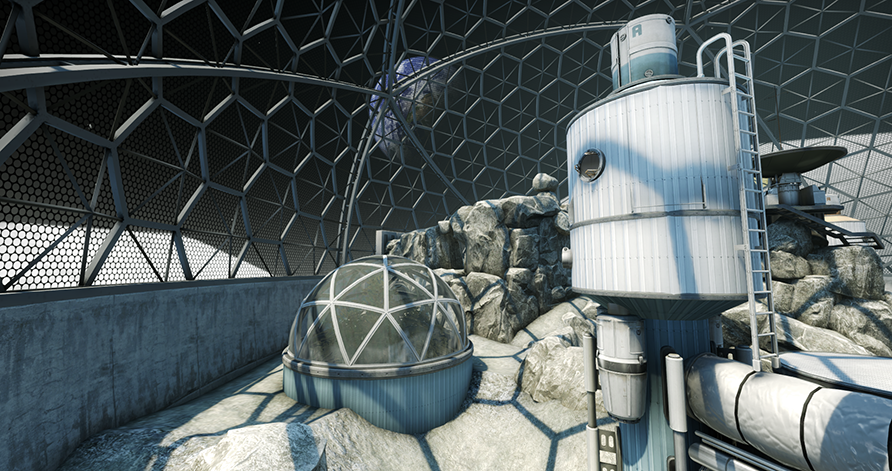

Flying Scoutsman maps in opperation Shattered Web
Lunacy
Lunacy (ar_lunacy) is a Flying Scoutsman map added during Operation Shattered Web in Counter-Strike: Global Offensive. This map is placed in a hangar, with a fake roof supposed to represent the moon's sky. This map uses shaders that are not available in current version of the Source Hammer Editor. It's possible that this map was created in Source 2.